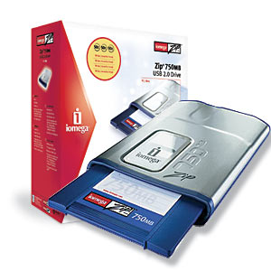

Lukem.net nie jest już aktualizowany. Przeczytaj ostatni wpis »
13 zapomnianych technologii
24.04.2009, 20:35 KomputeryIT to sfera, w której innowacje rodzą się z dnia na dzień i tak samo szybko mogą szybko stracić na znaczeniu. W efekcie powstaje cmentarzysko technologii, aplikacji i rozwiązań, które kiedyś albo miały szanse na swoje pięć minut sławy i chwały, albo z czasem zostały kompletnie porzucone na rzecz innych. Zebrałem 13 takich rzeczy, związanych głównie z internetem i komputerami. Kolejność przypadkowa.
Webcasting. Pomysł Microsoftu na szybkie dostarczanie użytkownikowi treści z internetu, realizowany poprzez kanały w Internet Explorerze w wersji od 4.0 w górę. Po dodaniu nowego kanału (pliku w formacie cdf), przeglądarka mogła cyklicznie sprawdzać stronę w poszukiwaniu aktualizacji, a w przypadku znalezienia jej – zapisać stronę na dysku. Jak dla mnie typowy przykład rozwiązania, które o kilka lat wyprzedziło swoje czasy. Używając Windows 95 (1998-2000?) i nie mając w domu łącza internetowego nigdy z tego nie skorzystałem. Może nie ma czego żałować – dziś mamy RSS, który znakomicie spełnia swoją funkcję.
Aktywny Pulpit. Kolejny niewypał spod znaku Microsoftu, wprowadzony w Windows 98. Teoretycznie miał służyć dostarczeniu treści z internetu prosto na pulpit użytkownika. W praktyce skończył tak, jak kanały w IE: bez sensu używać tego offline i do tego narażać się na regularne problemy ze stabilnością systemu (a te wcale do rzadkości nie należały). I chociaż Active Desktop wciąż jest obecny w Windows XP (Vista? Seven?), to nie wiem czy nadal jest w użyciu – widżety spełniają te same założenia, a są jakby mniej kłopotliwe.
Webringi. Starożytna technika zrzeszania stron o zbliżonej tematyce w “pierścień”. Wszedłeś na stronę i nie znalazłeś na niej tego, czego szukasz? Żaden problem – klikasz w link “Następna” i kontynuujesz poszukiwania aż do skutku. Można było nawet zakładać własne – chociażby na Onecie. Dobry sposób na wzajemną promocję, który dokonał żywota na początku ery Google. Wyjątkiem od tej reguły są zbliżone mechanizmy funkcjonujące do dzisiaj w serwisach Blox.pl i Blogger.com i pewnie paru innych.
Listy dyskusyjne. Nie mylić z grupami, bo te mają się względnie dobrze. Przez kilka lat, za czasów używania komórek Motoroli sam należałem do jednej takiej listy – wystarczyło się zapisać i wysyłać maile pod specjalny adres, a wysłany list trafiał do wszystkich subskrybentów. Dekadę później mamy fora dyskusyjne, blogi, Blipa i wiele innych sposobów na dotarcie do innych internautów.
Multiwyszukiwarki. Jeszcze jeden pomysł, który zginął w młodym wieku z rąk Google. Multiwyszukiwarki zbierały, formatowały i serwowały informacje z kilku tradycyjnych wyszukiwarek naraz. Przykładem może być polski Emulti.pl czy zagraniczny Dogpile. Nie wiem jak było z ich skutecznością, bo w czasach ich względnej świetności nie potrafiłem tego ocenić. Dziś chyba nie ma to większego sensu, dopóki rynek wyszukiwania trzymany jest w garści przez jedną firmę na G.
ICQ. Komunikator, który w Polsce raczej nie zyskał popularności, a i na świecie nie wygląda na zbyt rozpowszechniony. Polacy mają Gadu-Gadu, zaś od zagranicznych znajomych (zwłaszcza na czatach czy portalach randkowych) łatwiej dostać chociażby MSN. Jak widać, nie zawsze wystarczy być pierwszym, by dominować na rynku. Metaforycznie rzecz ujmując, zielony kwiatek zwiędł i przy słoneczku, i przy żarówce, a nawet dał się zadeptać przez kolorowego motylka.
Czaty. Okej, może niezupełnie umarły, ale mocno straciły na znaczeniu. Była to pierwsza rzecz, która przyciągała mnie do kafejek internetowych – inni w międzyczasie wybierali wielogodzinne partie w Unreal Tournament czy Quake’a 3 Arena. Zachowałem nawet kilka kontaktów z tamtych lat (okolice 2001 r.) i zdarza mi się zaglądać do ulubionych pokoi, ale to już nie to samo. Z kolei internauci “obecnej generacji” mają inne rozrywki – naszą-klasę, gry online, Gadu-Gadu i wiele innych. Inna rzecz, że w pewnym momencie narobiono czatom złego PR, mówiąc o szerzącej się pedofilii czy niebezpieczeństwach kontaktu z nieznajomymi.
Księgi gości. No przyznać się, kto nie miał takowej na swojej pierwszej stronie? Ja tak. Przetrwała, o ile pamiętam, do 2006 r. – komentarze na blogu postawiły pod znakiem zapytania sens jej istnienia. Ale było coś takiego i miło się czytało te wpisy w stylu “fajna stronka, pozdrawiam”. Zresztą, darmowe serwisy umożliwiające założenie własnych ksiąg oraz skrypty do samodzielnej instalacji wciąż istnieją.
Magazyny internetowe, zwane też magami czy zinami. W dawnych czasach rozpowszechniane na dyskietkach (które często trzeba było wysyłać autorom w celu otrzymania egzemplarza), a potem mailem. Niektóre z nich były małymi dziełami sztuki, zwłaszcza te rodem z demosceny. W pewnym momencie ustąpiły pola blogom, serwisom internetowym i newsletterom. Ze znanych mi mogę wymienić do dziś prowadzoną Esensję, Action Maga, a także nieistniejący już Webhelp magazyn czy Reportera.
Trackerowe formaty muzyczne, takie jak mod, xm, mpt czy s3m. W takiej postaci powstawała muzyka na demoscenie. Zawsze mnie zadziwiało, że utwory z względnie dużą liczbą różnych instrumentów (samplowanych) zajmowały tak niewiele miejsca – 1 megabajt to było maksimum. Miałem nawet pokaźną kolekcję muzyki w takim formacie i trochę żałuję, że nie zachowała się do dzisiaj. Jedynym minusem był fakt, że nadawały się do słuchania albo w Winampie, albo w macierzystych programach (tzw. trackerach), a ja nie umiałem skonwertować ich do mp3.
Napędy ZIP – dla odmiany coś z kategorii urządzeń peryferyjnych. W dużym uproszczeniu, były to napędy obsługujące dyski o pojemności 100 MB-1,5 GB w zależności od standardu (oprócz ZIP było ich jeszcze kilka, m.in. Jaz i SyJet). Służyły głównie do archiwizacji danych i ze względu na cenę nie były spotykane w domowych zestawach. Dziś za to są pendrive’y, karty pamięci, dyski optyczne i pojemne dyski twarde.

LightScribe. Świetny przykład na to, że praktycznie każdy produkt potrzebuje reklamy, by zyskać choćby szczątkową popularność. W tym przypadku chyba niezbyt się to udało – napędy niby są, płyty też, ale motywacji do użytku czy przykładów zastosowania w życiu codziennym nie spotykam praktycznie wcale. O co w ogóle chodzi? O możliwość wypalenia własnego nadruku na specjalnie przystosowanej do tego płycie CD/DVD. Nawet nie wiem, ile kosztują dyski do tego celu.
I na deser coś z kategorii telefonii komórkowej, mianowicie nadawanie komórkowe (CB). Sieci używają tego do wyświetlania informacji ze stacji bazowych. W Polsce używa się tego praktycznie tylko do wyświetlania aktualnego miejsca pobytu (kanał 50). Kiedyś w Erze można było otrzymywać tą drogą ogłoszenia towarzyskie i dowcipy (nie wiem, czy dziś jeszcze to funkcjonuje) oraz dość szczegółowe informacje o lokalizacji (z dokładnością co do dzielnicy czy ulicy). Pozostałe setki dostępnych kanałów, które mogłyby służyć do rozsyłania informacji o pogodzie, ruchu drogowym, czy nawet reklam, leży odłogiem.
I tak dalej, i tak dalej. Wiele z tych rozwiązań zostało wyparte przez ich ulepszone odpowiedniki, pozostałe zeszły do podziemia. Pisząc ten wpis sięgnąłem pamięcią ok. 10 lat wstecz – ciekawe jak będzie ona wyglądać w następnej dekadzie…
Źródła grafik: Microsoft, Computer-reviews.net, acl-1974.de, Wikipedia, Ocean City Public Library, Rayboy.
Tagi: Internet, Komputery, komunikatory, webcast, zapomniane
Zobacz także
Komentarze do wpisu
-
Paweł Wolak24.04.2009, 20:50
Bardzo ciekawy temat podjąłeś, a można by go z pewnością rozbudować o jeszcze wiele, wiele mniej czy bardziej udanych pomysłów… Co ważne, właściwie każdy z wybranych przez Ciebie pomysłów przerodził się w coś nowego – co świadczy o tym, że wcale nie umarły. A LS też jeszcze nie używałem, ale traktuję go jak atut mojej nagrywarki, gdy będę chciał tanim kosztem podarować komuś płytkę z jakimś ważniejszym projektem.
-
Ravicious24.04.2009, 20:51
Action Maga jeszcze się czyta (bo jest fajny i dostaję go co miesiąc na CD ;-), na Esensję nigdy nawet nie spojrzałem – po prostu nie chciało mi się ;-)
Aktywny Pulpit faktycznie często się sypał, a że w czasach, kiedy używałem 98 SE/ME, nie miałem internetu, to był dla mnie również bezużyteczny.
Ciekawa lista :)
-
Filthy24.04.2009, 20:55
Księgi gości żyją i mają się (dość) dobrze – może to nie jest to co kiedyś, ale każde radio albo blogspot z linkami do rapidshare ;-) ma swój shoutbox czyli trochę bardziej real-time mutację starej dobrej księgi gości.
A co do zgrywania modków do mp3 wystarczył własnie Winamp i wtyczka DiskWriter – zgrywało się do wav’a, a potem to już każdy lame wie co zrobić ;-)
-
Lukem24.04.2009, 22:11
Filthy: Ano właśnie… wtyczki wtedy nie miałem. No trudno. Racja co do księgi gości – o shoutboksach nie pomyślałem.
Ravicious: Ja chyba poczytam sobie niedługo stare artykuły, bo też były fajne. :)
Paweł Wolak: Podobnie ze mną. Jak będzie więcej czasu, to poszukam sobie płyt i przetestuję.
-
Ktos25.04.2009, 9:06
Webcasting/kanały/Active Desktop z czasów IE4 i NN4 w zasadzie doprowadziły (dzięki Netscape) do powstania RSS – i to jedna z kilku technologii, jakie nam zostały z tamtych czasów. Jedna z lepszych ;-)
A listy dyskusyjne jeszcze żyją, zwłaszcza wśród programistów różnych projektów open-source. Choćby wspomnieć lkml (Linux Kernel Mailing List).
-
Asia5.05.2009, 20:51
ech muzyczki .mod i trakery…piękne czasy :) dziwi mnie tylko upadek lightscribe, bo pomysł całkiem fajny.
-
kmrozek6.05.2009, 21:42
Dostałam swego czasu 20 płyt LS. W dalszym ciągu szkoda mi wypalać normalną nagrywarą, a LS jak nie posiadałam tak nie posiadam. Idealnie formują kurz na swoim przejaranym przez czas, acz zwartym opakowaniu.
-
Yako19.05.2009, 15:18
Oj nie zgodzę się. ICQ było pierwszym komunikatorem i kiedyś, w czasach przed-gadugadu korzystało z niego wielu Polaków. Naprawdę. Oczywiście skala była inna, bo i dostęp do netu był trudniejszy – niemniej – używano tego komunikatora.
Od 21.08.2009 r. możliwość komentowania wpisów została wyłączona.
Krótko i zwięźle
o mnie i o blogu Nazywam się Łukasz Wójcik. Strona ta była swego czasu moim sieciowym poligonem. Od sierpnia 2009 r. funkcjonuje jako archiwum wpisów. Więcej o mnie znajdziesz na mojej stronie domowej.
Nazywam się Łukasz Wójcik. Strona ta była swego czasu moim sieciowym poligonem. Od sierpnia 2009 r. funkcjonuje jako archiwum wpisów. Więcej o mnie znajdziesz na mojej stronie domowej.
Archiwum
historia wpisów na blogu- Wrzesień 2009
- Sierpień 2009
- Lipiec 2009
- Czerwiec 2009
- Maj 2009
- Kwiecień 2009
- Marzec 2009
- Luty 2009
- Styczeń 2009
- Grudzień 2008
- Listopad 2008
- Październik 2008
- Wrzesień 2008
- Sierpień 2008
- Lipiec 2008
- Czerwiec 2008
- Maj 2008
- Kwiecień 2008
- Marzec 2008
- Luty 2008
- Styczeń 2008
- Grudzień 2007
- Listopad 2007
- Październik 2007
- Wrzesień 2007
- Sierpień 2007
- Lipiec 2007
- Czerwiec 2007
- Maj 2007
- Kwiecień 2007
- Marzec 2007
- Styczeń 2007
Kategorie
co Cię interesuje?Blogroll
lubię i polecamMiniblog
#PolandwantsJB (2) 19.07.2009 r.
Drogie Polki i drodzy Polacy. Nie przenoście zwyczajów rodem z blogów Onetu na Twittera. Zamiast bezsensownie spamować międzynarodowy serwis i wyrabiać sobie i innym wątpliwą renomę, napiszcie maile do tych swoich Jonas Brothers albo zwróćcie się do nich bezpośrednio. Dziękuję za uwagę.
Egzystencjalne #8 (3) 17.07.2009 r.
W całej tej wojnie o publiczne media uwiera mnie jeden fakt. W okresie wakacyjnym większość telewizji (prywatne też, ale teraz nie o nich mowa) serwuje powtórki wszystkiego, co im się nawinie pod rękę i jeszcze się nadaje do odtworzenia. Ciekawy jestem dlaczego zamiast płacić abonament, nie można wysłać im kserokopii dowodów wpłat z zeszłego roku.
Nowy hosting (5) 12.07.2009 r.
Od kilkudziesięciu godzin blog jest serwowany z nowego miejsca – Linuxpl.com. Przerwa w działaniu byłaby krótsza gdyby nie OVH i Firefox, które wspólnie odmówiły mi szybkiego odświeżenia i rozpropagowania nowych DNSów. Jednak wszystko wskazuje na to, że operacja się udała, a pacjent (czyt. blog) działa nieco szybciej.

{kind=link}
{kind=link}
{kind=link}
{kind=link}